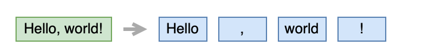
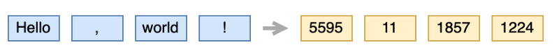
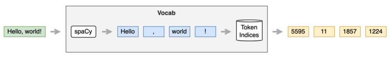

Transformer Data Loader
To Make Writing A Training Loop Simple

The previous article discussed my simple implementation of the transformer architecture from Attention Is All You Need by Ashish Vaswani et al.
This article discusses the implementation of a data loader in detail:
- Where to get text data
- How to tokenize text data
- How to assign a unique integer for each token text
- How to set up
DataLoader
Ultimately, we will have a data loader that simplifies writing a training loop.
1 Where To Get Text Data
We need pairs of sentences in two languages to perform translation tasks — for example, German and corresponding English texts.
The paper mentions the below two datasets:
- WMT 2014 English-to-German translation
- WMT 2014 English-to-French translation
But I wanted to use something much smaller to train my model for less than a day without requiring massive GPU power.
Yet, I don’t want to write a web scraping script to collect such paired texts as it will take a lot of time and defeat the purpose.
So, I decided to use PyTorch’s torchtext.datasets, specifically to use Multi30k’s training dataset. Also, I decided to do German-to-English translation so that I could understand translated sentences generated by the model.
However, the torchtext.datasets library has other machine translation datasets, too. So, I wrote a utility function to load a dataset:
from torch.utils.data import IterableDataset
from torchtext import datasets
from typing import Tuple
def load_dataset(name: str, split: str, language_pair: Tuple[str, str]) -> IterableDataset:
dataset_class = eval(f'datasets.{name}')
dataset = dataset_class(split=split, language_pair=language_pair)
return datasetFor example, I can load the training dataset from Multi30k German-English translation as follows:
dataset = load_dataset('Multi30k', 'train', ('de', 'en'))The dataset has 29K pairs of German and English sentences.
Note: de is from Deutsch (German language). en is from English. So, ('de', 'en') means that we are loading a dataset for German-English text pairs.
The returned dataset is torch.utils.data.IterableDataset, which is iterable and we can use in a for loop:
for de_text, en_text in dataset:
print(de_text, en_text)The first sentence pair is:
Zwei junge weiße Männer sind im Freien in der Nähe vieler Büsche.
Two young, White males are outside near many bushes.One thing to note is that we need to reload IterableDataset once the loop reaches the end. So, if you do the for loop again, you will get an StopIteration exception.
We can use DataLoader to generate sentence batches for each language:
from torch.utils.data import DataLoader
dataset = load_dataset('Multi30k', 'train', ('de', 'en'))
loader = DataLoader(dataset, batch_size=32)
for de_text_batch, en_text_batch in loader:
...still texts...However, we can not directly feed text data into neural networks. So, we need to tokenize text data and convert them into PyTorch tensors.
2 How To Tokenize Text Data
We need to tokenize each sentence text into token texts. We call this process tokenization. Tokenization is language-specific, and it’s not a simple business to implement it from scratch.

So, I used spaCy in my code.
It’s easy to install spaCy provided you already have a Python environment.
# Install spacy in your conda or virtual environment
pip install spacyTo use spaCy’s language tokenizer, we must obtain the respective language modules.
For example, we can download the English language module as follows:
# Download English language module
python -m spacy download en_core_web_smIn case of venv environment, we can locate the download module at:
./venv/lib/python3.8/site-packages/en_core_web_smWe can load the English language module as follows:
import spacy
tokenizer = spacy.load('en_core_web_sm') # sm means smallAs a side note, we can also import en_core_web_sm as a Python module:
import en_core_web_sm
tokenizer = en_core_web_sm.load()I like the first method because it specifies which language to load as a string that we can store in a config file.
Either way, it’s simple to tokenize an English sentence as follows:
import spacy
tokenizer = spacy.load('en_core_web_sm')
tokens = tokenizer('Hello, world!')
print([token.text for token in tokens])
# Output: ['Hello', ',', 'world', '!']Similarly, we can download de_core_news_sm for German text tokenization.
Now, we can tokenize German and English sentences from the Multi30k dataset.
import spacy
de_tokenizer = spacy.load('de_core_news_sm')
en_tokenizer = spacy.load('en_core_web_sm')
dataset = load_dataset('Multi30k', 'train', ('de', 'en'))
for de_text, en_text in dataset:
de_tokens = de_tokenizer( de_text )
en_tokens = en_tokenizer( en_text )… now what?
3 How To Assign Unique Integer For Each Token Text
We want to convert each token text into a unique integer (token ID). We use token IDs to look up an embedding vector.

You can read more about word-embedding look-up in this article.
So, we need to build a map between token texts and token IDs.
Torchtext has Vocab class for such purpose, but I decided to write my own implementation so my codes do not depend too much on the Torchtext framework.
Suppose I have a list of English or German texts. I can make a list of unique token texts as follows:
from collections import Counter
counter = Counter()
for doc in tokenizer.pipe(texts):
token_texts = []
for token in doc:
token_text = token.text.strip()
if len(token_text) > 0: # not a white space
token_texts.append(token_text)
counter.update(token_texts)
# unique tokens
tokens = [token for token, count in counter.most_common()]I used Counter to make a list of unique token texts. We can also use set to do the same.
One advantage of Counter is that it is in the frequency order. When dealing with many, you can limit the number of tokens to the most frequent N tokens, eliminating infrequently used ones.
counter.most_common(10000) # up to most frequent 10,000 tokensI’m using it to generate a list of unique tokens for my implementation.
The below shows the top 20 tokens from the English sentences of Multi30k dataset.
a
.
A
in
the
on
is
and
man
of
with
,
woman
are
to
Two
at
wearing
people
shirtI save all the tokens in a file. So, the next time we need a list of the unique tokens, we can load it from the file.
path = '<where we want to save tokens>'
os.makedirs(os.path.dirname(path), exist_ok=True)
with open(path, 'w') as f:
f.writelines('\n'.join(tokens))Now that we have a list of unique token texts, all we need to do is:
index_lookup = { tokens[i] : i for i in range(len(tokens)) }Voilà! We have a map between token texts and unique token IDs.
That’s not it yet. We need to deal with four special tokens. So, we reserve indices 0–4 for them:
# special token indices
UNK_IDX = 0
PAD_IDX = 1
SOS_IDX = 2
EOS_IDX = 3
UNK = '<unk>' # Unknown
PAD = '<pad>' # Padding
SOS = '<sos>' # Start of sentence
EOS = '<eos>' # End of sentence
SPECIAL_TOKENS = [UNK, PAD, SOS, EOS]You can read more details about the special characters in this article.
So, we combine the special tokens with the list of unique token texts and build a map of token texts and token IDs:
tokens = SPECIAL_TOKENS + tokens
index_lookup = { tokens[i] : i for i in range(len(tokens)) }We can look up a token index by a token text as follows:
if token in index_lookup:
token_index = index_lookup[token]
else:
token_index = UNK_IDXSo, I put everything together into my Vocab class:
import spacy
from typing import List
# special token indices
UNK_IDX = 0
PAD_IDX = 1
SOS_IDX = 2
EOS_IDX = 3
UNK = '<unk>' # Unknown
PAD = '<pad>' # Padding
SOS = '<sos>' # Start of sentence
EOS = '<eos>' # End of sentence
SPECIAL_TOKENS = [UNK, PAD, SOS, EOS]
class Vocab:
def __init__(self, tokenizer: spacy.language.Language, tokens: List[str]=[]) -> None:
self.tokenizer = tokenizer
self.tokens = SPECIAL_TOKENS + tokens
self.index_lookup = {self.tokens[i]:i for i in range(len(self.tokens))}
def __len__(self) -> int:
return len(self.tokens) # vocab size
def __call__(self, text: str) -> List[int]:
text = text.strip()
return [self.to_index(token.text) for token in self.tokenizer(text)]
def to_index(self, token: str) -> int:
return self.index_lookup[token] if token in self.index_lookup else UNK_IDXNow, we can convert a sentence text into a list of integers as follows:
vocab = Vocab(tokenizer, tokens)
token_indices = vocab('Hello, world!')
print(token_indices)
# output: [5599, 15, 1861, 1228]
4 How To Set Up A DataLoader
I used PyTorch’s DataLoader and collate_fn to encapsulate tokenization and token index processing details, so it’s easy to use for training.
The idea of collate_fn is simple. It’s a function that converts a batch of raw data into tensors. A batch is a list of source (German) and target (English) sentence pairs:
def collate_fn(batch: List[Tuple[str, str]]):
.... convert text data into tensors ...
return ... tensors ...Once we have collate_fn defined, we can give it to DataLoader as follows:
loader = DataLoader(dataset, batch_size=32, collate_fn=collate_fn)Inside the collate_fn function, we tokenize sentence pairs from batch. We prepend SOS_IDX and append EOS_IDX for target sentences. Finally, we convert token indices into Tensor and keep them in a list.
from torch import Tensor
source_tokens_list = []
target_tokens_list = []
for i, (source_sentence, target_sentence) in enumerate(batch):
# Tokenization
source_tokens = source_vocab(source_sentence)
target_tokens = target_vocab(target_sentence)
target_tokens = [SOS_IDX] + target_tokens + [EOS_IDX]
source_tokens_list.append( Tensor(source_tokens) )
target_tokens_list.append( Tensor(target_tokens) )Each sentence comes in a different number of tokens. So, we use pad_sequence to append paddings to each token sequence up to the max sequence length (the longest sequence length within the current batch):
from torch.nn.utils.rnn import pad_sequence
source_batch = pad_sequence(source_tokens_list,
padding_value=PAD_IDX,
batch_first=True)
target_batch = pad_sequence(target_tokens_list,
padding_value=PAD_IDX,
batch_first=True)padding_value = PAD_IDX means we use PAD_IDX to pad shorter token ID sequences. As PAD_IDX is 1, we are appending 1s to them.
batch_first = True means we want the shape to have the batch dimension first: (batch_size, max_sequence_length) instead of the default shape (max_sequence_length, batch_size), which I feel is unintuitive.
For details of pad_sequence, please refer to the PyTorch documentation.
We split the target batch into two batches:
- Inputs to the decoder (Each input starts with
SOS_IDX) - Labels for loss calculation (Each label ends with
EOS_IDX)
label_batch = target_batch[:, 1:] # SOS_IDX, ...
target_batch = target_batch[:, :-1] # ..., EOS_IDXThen, we create a source mask and target mask:
source_mask, target_mask = create_masks(source_batch, target_batch)For the details of create_masks, please look at this article.
At the end of collate_fn, we move all batches and masks to the target device:
....
all_batchs = [ source_batch,
target_batch,
label_batch,
source_mask,
target_mask ]
# move everything to the target device
return [x.to(device) for x in all_batches]I created a make_dataloader function to build a DataLoader given a dataset and a pair of Vocab objects.
The collate_fn is defined within the make_dataloader so that it can access all the input parameters:
def make_dataloader(
dataset : IterableDataset,
source_vocab : Vocab,
target_vocab : Vocab,
batch_size : int,
device : torch.device) -> DataLoader:
def collate_fn(batch: List[Tuple[str, str]]):
... all the above details ...
return DataLoader( dataset,
batch_size = batch_size,
collate_fn = collate_fn )At the end of the make_dataloader, it returns a DataLoader with collate_fn specified.
The data loader makes it easy to write a training loop as follows:
# Training parameters
epochs = 10
batch_size = 32
device = torch.device('cuda:0')
# Vocab pair
source_vocab = Vocab(de_tokenizer, de_tokens)
target_vocab = Vocab(en_tokenizer, en_tokens)
# Transformer
model = Transformer(....)
# Loss function
loss_func = ...
for epoch in range(epochs):
dataset = load_dataset('Multi30k', 'train', ('de', 'en'))
loader = make_dataloader(dataset,
source_vocab,
target_vocab,
batch_size,
device)
for source, target, label, source_mask, target_mask in loader:
logits = model(source, target, source_mask, target_mask)
loss = loss_func(logits, label)
... back-prop etc...5 References
- The Annotated Transformer
Harvard NLP - Language Modeling with nn.Transformer and Torchtext
PyTorch